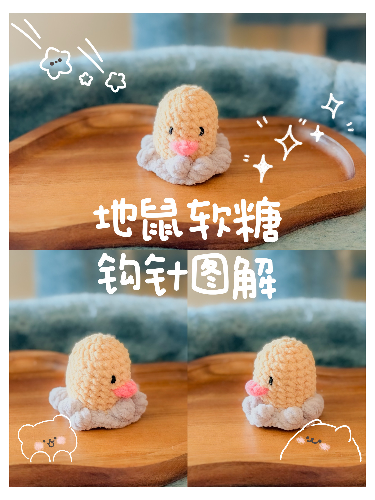

Puffy Kitty Crochet Pattern
地鼠软糖
由地鼠草稿整理出的正式软糖图解，包含主体、石头底座和红色嘴巴。
Diglett gummy pattern converted from the draft, including the body, rocky base, and red mouth.

打开交互式图解 / Open interactive pattern
主体图解
| 轮数 | 中文 | US | UK |
|---|---|---|---|
| R1 | 环起6x | magic ring, 6 sc | magic ring, 6 dc |
| R2 | 6v | 6 inc | 6 inc |
| R3 | 6(x, v) | 6(sc, inc) | 6(dc, inc) |
| R4-10 | 18x | 18 sc | 18 dc |
| 换线 | 整体换灰色线 | Change to gray yarn for the rest | Change to grey yarn for the rest |
| R11 | 外半针：6(x, v, x) | Front loop only: 6(sc, inc, sc) | Front loop only: 6(dc, inc, dc) |
| R12 | 6(3x, v) | 6(3 sc, inc) | 6(3 dc, inc) |
备注
R11 和 R12 上随机选 4-5 个 x 钩成 B，形成石头。
记号
x = 短针，v = 加针，B = 泡泡针，SL = 引拔针。